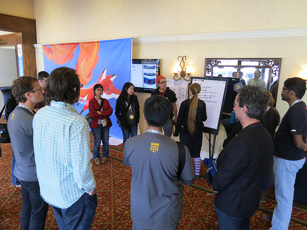
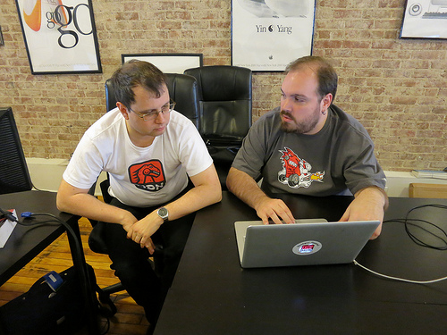

最近十年來，Mozilla 開發者社群網站 (Mozilla Developer Network，MDN) 已經成為數百萬名 Web 與行動開發者的重要技術資訊來源。雖然目前每個月都有數百名開發者為 MDN 熱情貢獻，但我們知道還是有許多 Web 高手尚未參與。MDN 與 Web 絕對能受益於這些人的知識＼技術，因此 Mozilla 要啟動研究方案，激勵這些高手貢獻己身所長。

Tristan Nitot 於 Summit 2013 所攝。
方案性質為何
兼差型的「MDN 研究方案」，是為期 7 週、每週 5 ~ 10 小時的教育與領導方案，並將讓 Web＼行動開發高手搭配 Mozilla 的工程＼教學專家，合力打造高影響力的重要 Web 專案。研究員可透過 App 開發、撰寫 API 說明、針對專案於 MDN 上設計課程等方式來貢獻。專案導師也會為研究員提供實機操作課程，且 Mozilla 專家另將訓練並傳授課程開發技巧，達到教學相長的效果。
方案概述
以下提供其中幾項技術主題，以及由首批 MDN 研究員確認過的相關專案作業。
- ServiceWorkers 主要作為 Web App、瀏覽器、網路 (若有可用網路) 之間的代理伺服器 。ServiceWorkers 也是 Web App 是否成功的關鍵，除了能提供不錯的離線經驗，亦可存取推播通知與背景同步 API。 你所能參與的部分： 撰寫展示用的 Web App (全新或現成均可)，以呈現 Service Worker 的功能，並提供 API 的詳細說明。ServiceWorkers 主要作為 Web App、瀏覽器、網路 (若有可用網路) 之間的代理伺服器 。ServiceWorkers 也是 Web App 是否成功的關鍵，除了能提供不錯的離線經驗，亦可存取推播通知與背景同步 API。
- WebGL 是 OpenGL 家族的最新成員，為即時繪圖 (Immediate-mode) API。 在發佈 WebGL 2.0 規格的標準化結果之後，WebGL 將在今年新加入酷炫的新功能。 你所能參與的部分： 擬定 MDN 線上課程，指導剛接觸圖像運算的 WebGL API 開發者。
- Web App 效能 。影響App 效能的因素眾多，如所提供的內容、互動性、繪圖作業等。要找到並突破效能瓶頸，就必須為瀏覽器的繪圖與連線作業打造工具，另需考量使用者的感受 (這也往往更重要)。 你所能參與的部分： 擬定 MDN 線上課程，指導開發者能夠熟用效能工具，並開發高效能的 Web App。
- TestTheWebForward 。Mozilla 是TestTheWebForward 進入 W3C 的重要推手。此為社群所主導的 Open Web 平台測試機制。 你所能參與的部分： 審核現有的多樣技術規格，找出說明文件與實際情況之間的差距。重新界定目前的測試作業，以因應跨瀏覽器的測試需求。
- MDN 課程開發。MDN 為數百萬名開發者提供可信賴的資源。而在 2015 年，MDN 另將透過「Content Kits」工具包加大服務範圍。此工具包內含程式碼範例、影片截圖與展示，還有更多內容。 你所能參與的部分： 監督關鍵 Web 技術的課程設計，並開發程式碼範例、影片、互動實作，以及其他重要教學要素。你也可以針對某個主題領域提案 (例如 Web 的虛擬實境、網路安全、CSS 等)，或依照你的專長領域配合 Mozilla 專案的優先順序一起合作。
WebGL 專案導師Nick Desaulniers 就說：「我很期待能與研究員合作，打造更平易近人的初階即時繪圖機制。」你可參閱MDN Fellowship 頁面以進一步了解個專案資訊，如專案導師以及所需的技術與經驗類型。

Tristan Nitot 所攝。
申請方式
如果你有興趣參與任何專案，可至網站上取得相關資訊，並於 4 月 1 日之前申請加入。我們將於 5 月宣佈入選的研究員，再於 6 月齊聚研究員與導師，讓大家互相熟悉之後就開始專案。接下來的六週內，你能在家中與自己的導師配合進行專案。你會收到導師或其他開發者的反饋意見，逐步修正自己工作的方向。
時間如下：
- 即日起到 4 月 1 日：申請！
- 4 月：面談最後的候選人。
- 5 月：宣佈入選的研究員。
- 6 月 (確切日期與位置再宣佈)：於 Mozilla Space 宣佈研究方向。
- 6 月 29 日到 8 月 3 日：進行自己的專案並定期參加團隊會議，逐步修正自己的工作。
- 8 月 11 ~ 12 日：結束。
適合你的專案……
你的程式碼、文件、自信，而且你要願意和廣大社群分享自己的技術。你可能想要跳脫目前的窠臼，為 Mozilla 的「保持 Web 的開放」等使命盡一份力。也許你也想對更多人分享自己的專業知能。
如果你想要有機會去：
- 貢獻 Mozilla 的專案，讓自己的技術專業能影響更多人。
- 能與 Mozilla 技術導師密切合作，延伸自己的專業領域。
- 能與 Mozilla 導師合作，將最佳教學實例整合到自己的作品之中。
前往MDN Fellowship 網站並於 4 月 1 日之前申請。也歡迎你呼朋引伴一起加入！